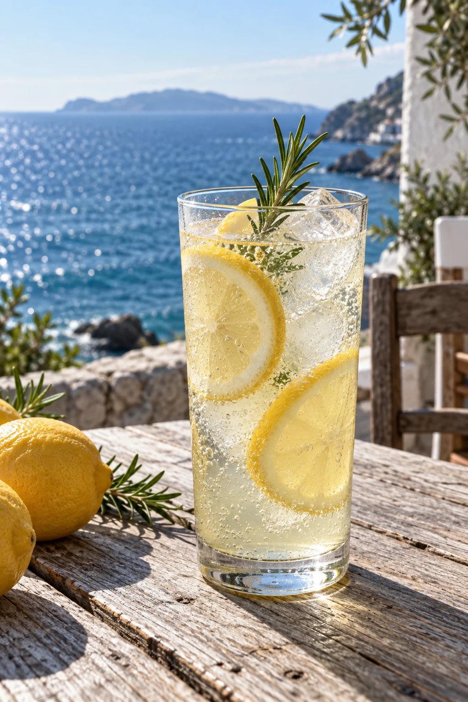
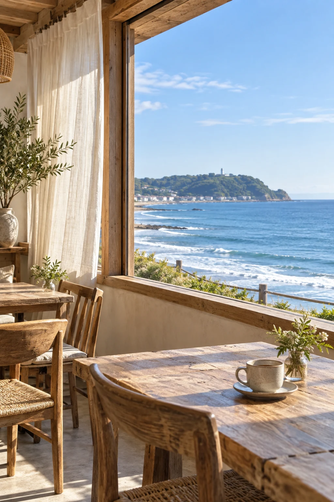
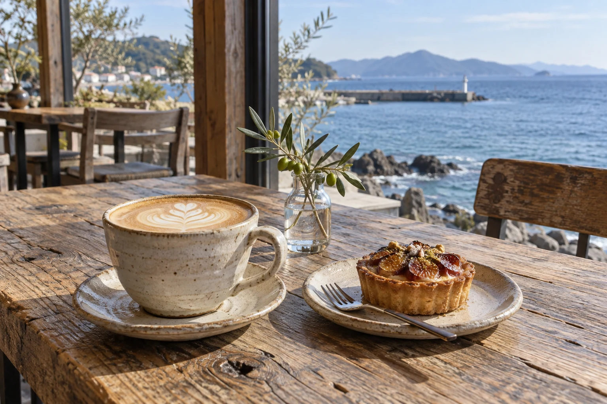
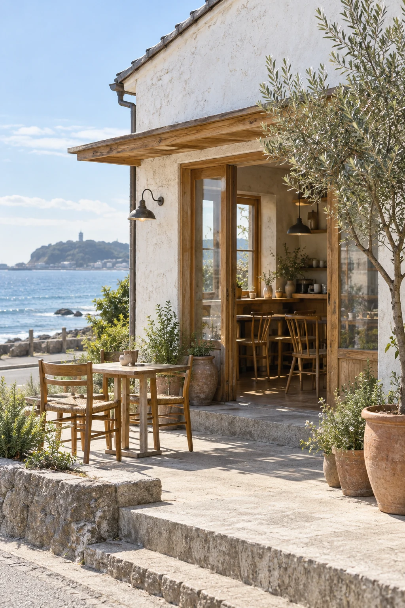
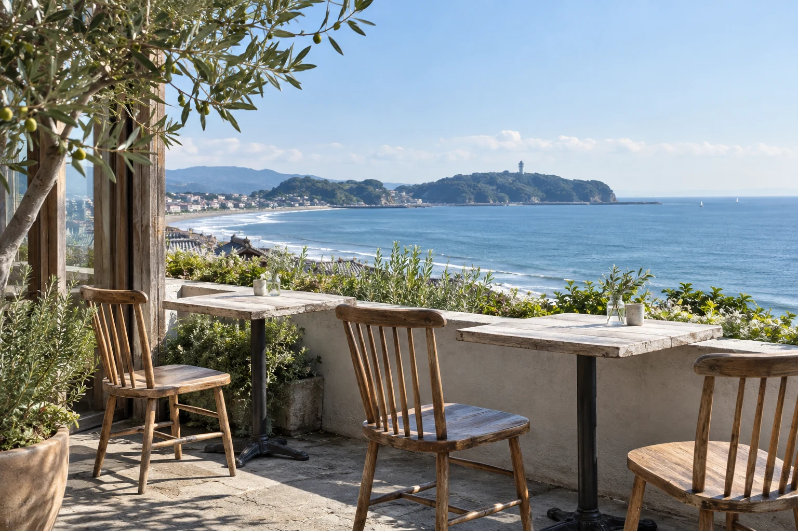
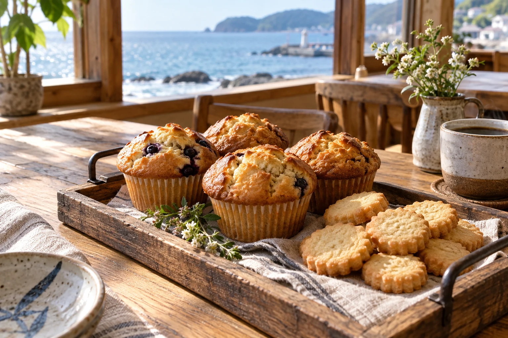
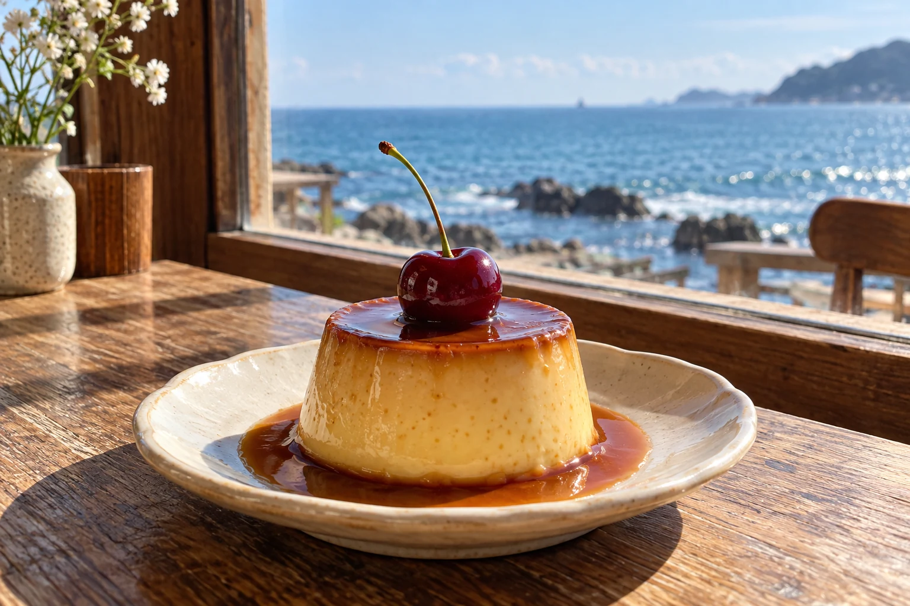
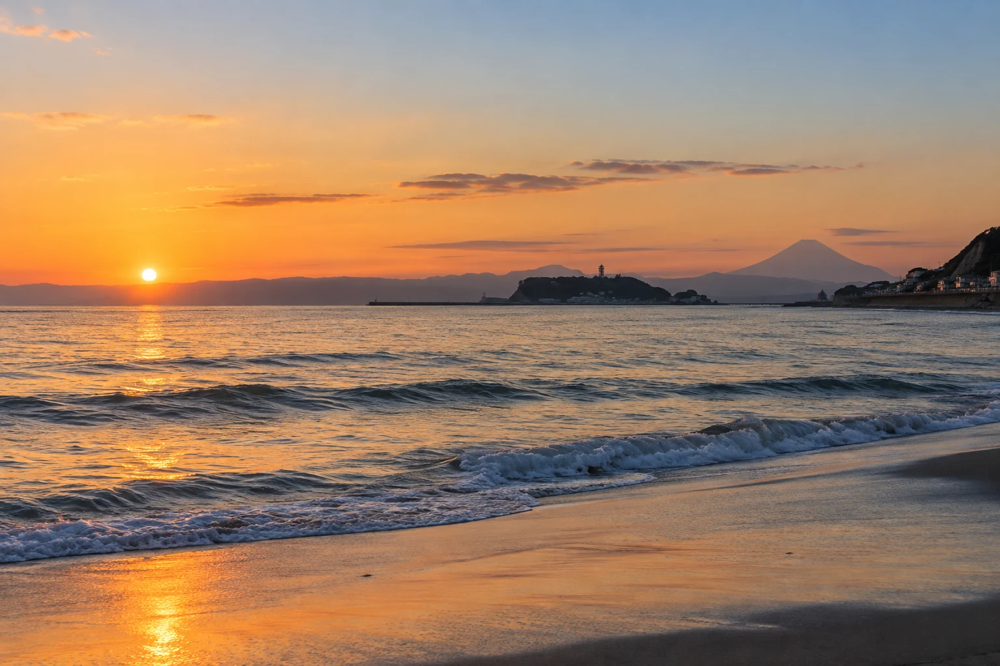

海のそばで、ほどける時間。
A LITTLE MOMENT BY THE SEA.
SCROLL01 / CONCEPT
潮の香りと、コーヒーのやさしい時間。

SLOW DOWN.
FEEL THE SEA.
FEEL THE SEA.
海のそばの小さなカフェ。
移ろう景色と、季節の味わいを
ゆっくりとお楽しみください。
ABOUT
季節の素材と、丁寧に淹れた一杯。

この場所で出会う、海、風、光。
その時々の季節の素材を使い、
ここにしかない味わいをお届けします。
FEATURE
ここにしかない、海辺のひとときを。
目の前に広がる海、やさしい風。
季節ごとに変わる景色。
心がほどける、特別な時間を
お過ごしください。


Nothing to do. Just be here.
NEWS
秋限定メニューが始まりました。+
秋の味覚を楽しむ季節のフルーツティーとタルトをご用意しました。海を眺めながら、ゆっくりとお楽しみください。
営業時間変更のお知らせ+
9月より営業時間は9:00〜18:00（ラストオーダー17:30）となります。木曜日はお休みです。
季節のタルトが新しくなりました。+
季節の果実を使ったタルトに切り替わりました。その日のラインナップは店頭でご案内します。
ACCESS
nagi cafe
〒248-0025
神奈川県鎌倉市七里ガ浜 2-12
江ノ電 七里ヶ浜駅より徒歩約5分
- OPEN
- 9:00 – 18:00 （L.O. 17:30）
- CLOSE
- 木曜日
- TEL
- 000-0000-0000
※店舗情報はデモ用の仮データです。
ILLUSTRATED MAP
Google Mapを見る↗七里ヶ浜周辺の地図を開きます。
海辺の日々を、少しずつ。

